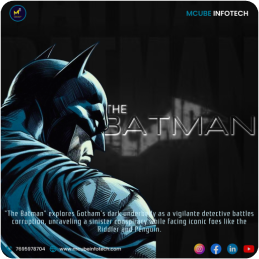
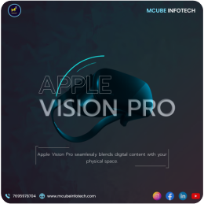
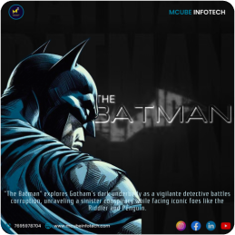
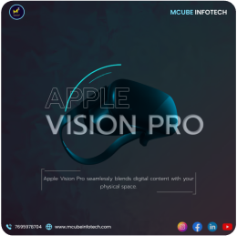
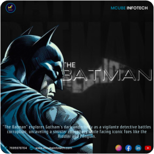
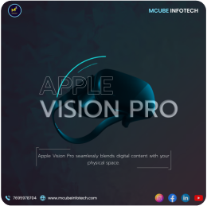

Course Tasks
 



Graphic Designer
I'm Karthick, a passionate Graphic Designer/UI-UX Enthusiast, breathing life into ideas through the my portfolio to see how I turn ideas into magic of design and technology.
Software Skills

